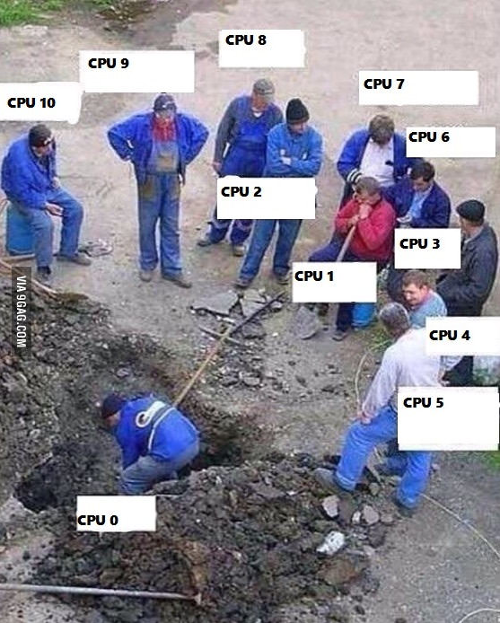
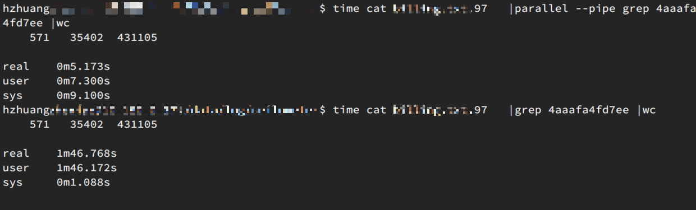
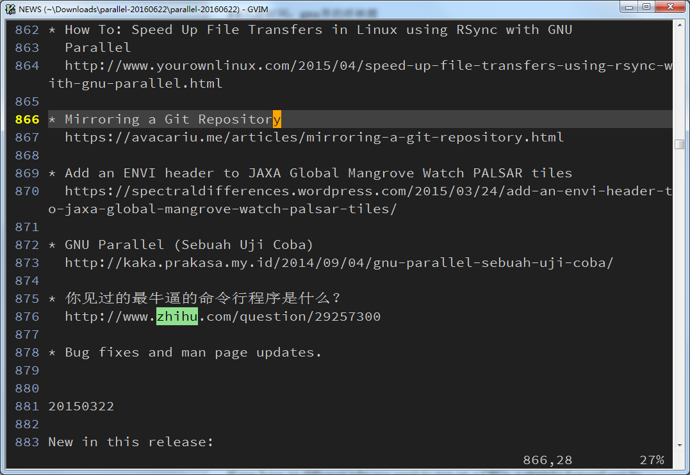
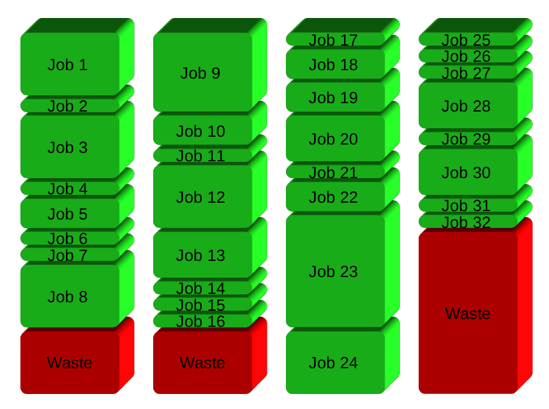
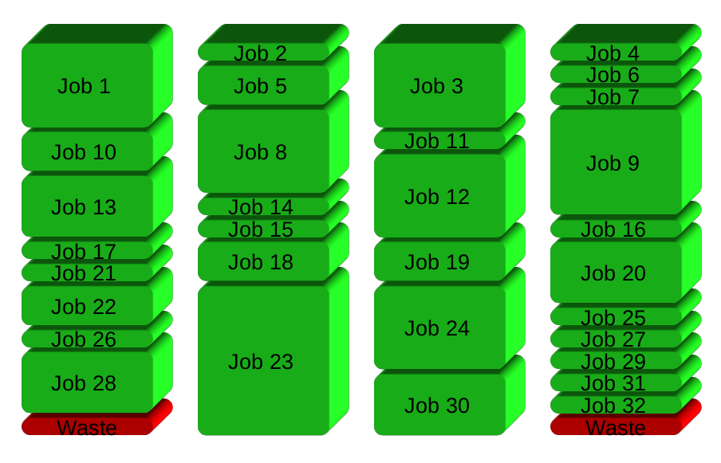

15分钟神器gnu-parallel-入门观止
Contents
这个cpu是多核的。
一般两核是这样工作的的：

四核是这样工作的：
16核是这样工作的：

好了不黑了。再黑intel要打我了。
在某个周末的早上百无聊赖之际，花了半天时间过了一遍gnu parallel的man page和tutorial。哈哈，我得说这半天时间花的应该挺值，因为感觉以后它能为我节省的时间不止半天吧。
本文并不会尝试去翻译 gnu parallel的man page或者tutorial。因为现成的翻译已经有了，可以看这里，或者这里。
但是我前几次看到 parallel诡异的几个::: 以及奇奇怪怪的 {}{#}{.}{\}占位符之后就打起了退堂鼓，如此丑陋的语法令人无爱啊。还好直接看了一下几个example压压惊，动手试一把，才发现实乃神器也。
本文主要的目的是安利（lure）你使用这个工具，并且告诉你为啥（why）使用和如何（how）使用。
why
使用gnu parallel的目的只要一个，就是为了快！
安装快
|
|
作者说10秒装好。在国内实际情况可能不够。但是也不用太久。其实就是一个1万多行perl单文件脚本（是的，你没看错，所有模块都在这个文件里，这是一个特色~）。我之后都是写fabric脚本直接拷贝到各个节点机。再chmod一下执行权限。
然后是执行快，它将你的程序并行利用系统的多核执行：
上图：

grep 一个 1G 大小的log。
使用parallel ，和不使用parallel直接grep。结果显而易见，相差 20 倍。这比用啥 ack，ag优化效果明显多了。
备注：这是在一个48 核服务器上执行的结果。
how
最简单的方法就是类比 xargs。在xargs里面有一个参数 -P，可以利用多核。
举个例子：
|
|
这一条xargs把每个echo的数作为参数传给sleep ，所以一共sleep了 1+2+3+4+5=15秒。
如果使用 -P 参数分给5个核，每个核各sleep 1,2,3,4,5秒，所以执行完之后总共sleep的5秒。
|
|
铺垫结束。一般情况下，parallel的第一种模式，就是替换掉 xargs -P.
比如压缩一下所有的html文件。
|
|
传参数模式
第一种模式是利用 parallel传参数。管道前面进来的作为参数传给后面的命令，并行执行
比如
|
|
其中{}是占位符，用来占位传入参数的位置。
在云计算操作中，经常有批量操作，比如建立10个云硬盘
|
|
建立50个云主机
|
|
批量删除云主机
|
|
改写 for loop
可以看到，我其实是把很多需要写循环的地方用parallel替换了，顺带享受了并行带来的快捷。
这个道理是这样的，在进行for循环的时候，是最有可能并行化的，因为被放在循环中的各个对象是上下文无关的。
普世抽象，shell的循环：
|
|
可以直接写成
|
|
如果loop 里面内容太多了
|
|
那么最好写成一个脚本
|
|
而且还能避免掉很多麻烦的转义。
–pipe模式
另一种模式就是 parallel --pipe
这时管道前面的不是作为参数，而是标准输入传给后面的命令
例如：
|
|
如果不加 --pipe ，相当于 mylog中的每一行都变成 grep pattern line的命令展开了。而加入了--pipe，则和 cat mylog | grep pattern 没有区别，只是分配到各个核上去执行了。
好了，基本概念就讲完了！其他的都只是各个参数具体使用，比如到底用几个核啊，place_holder的替换啊，各种花样传参数啊，并行执行但是保证结果顺序输出(-k)，以及神奇的跨节点并行计算啊，看看man page就知道了。
bonus
手边有了一个转换成并行的小工具，除了让你日常执行快一点之外，还有一个好处，就是测并发。
很多接口在并发操作下会出现一些bug，比如有一些判断数据库里面没有加锁，是在代码层面判断的，结果并发请求下去，每个请求在到达服务器的时候是判断通过，一起写了之后就超出限制了。之前写for循环因为是串行执行的，并不会触发这些问题。但是你要真正测并发的话，又要写脚本，或者利用python的mulitiprocessing封装一下。但我手边有了parallel，又在bashrc里面就加了以下两个alias
|
|
这样制造并发太方便了，只需要管道后面加个p , 我就时时刻刻可以制造并发来观察响应。
举个例子
|
|
以你核的个数并发请求。-n0的意思是seq输出不作为参数传给后面的命令。
##八卦时间：gnu界的祥林嫂
作为一个自由软件八卦爱好者，每次我发现一个新奇的软件总会去 google一下 关键词 site:https://news.ycombinator.com 和关键词 site:http://www.reddit.com/。看看风评如何，并且往往还能在讨论中有意外收获。
然后我再hacker news上看到了一段吐槽，主要就是说每次触发执行parallel都会弹出一段文字和你说，要是你把这个工具用在学术上的话（很多生命科学相关的都在用这个工具的），要引用他的论文，不然的话你就付他10000欧元吧。我因此学到一个词，叫Nagware，特指通过啰啰嗦嗦像唐僧那样烦你要你付钱的软件。虽然我认为真用到了的确也应该引用一下文章，但是，如同这位同学说的：
I agree it’s a great tool, except for the nagware messages and their content. Imagine if the author of
cdorlshad the same attitude…
另外，该作者真是灰常喜欢别人引用他的软件，以致于在NEWS里面我还看到了：

原理时间
直接摘抄一下作者在 stackoverflow 的回答
GNU Parallel is a general parallelizer and makes is easy to run jobs in parallel on the same machine or on multiple machines you have ssh access to.
If you have 32 different jobs you want to run on 4 CPUs, a straight forward way to parallelize is to run 8 jobs on each CPU:

GNU Parallel instead spawns a new process when one finishes - keeping the CPUs active and thus saving time:

结论
本文主要安利了一个 真 - 并行 工具，解释了其主要的两种模式，附赠了一个技巧，八卦了gnu界不为人知的另一面。希望对你有用。
Author smasterfree
LastMod 2019-12-24